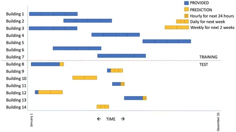

Ранее затрагивал тему китайских автомобилей. Не буду томить и хранить интригу: китай - шляпа. Отвратительная и ненужная шляпа. Кто вообще это покупает и, главное, зачем?
Так, пока меня не подняли на вилы, оговорюсь. Если вам нужна самобеглая повозка для перемещения вашей пятой точки из пункта А в Б, то некоторые китайские машины последних лет могут сносно справляться с этой задачей. Если вам все равно, на чем ездить, но хочется новую машину с гарантией, выбора у вас почти нет.
Но называть это хорошими автомобилями я, как старый петрол-хэд, отказываюсь. Да, к текущему моменту уровень китайцев вырос до почти приемлемого. Да, на прохождение этого пути от чери-амулет до монджары у них ушло удивительно мало времени. Да, через 5-10 лет они смогут делать нормальный ширпотреб на уровне нынешних kia. Объясняется это тем, что они сейчас всей страной неистово упарываются в эту тему - у одного byd порядка 100к инженеров, которые клепают патенты тысячами в день. Но их философия мне не нравится.
Во-первых, их ценности. "Мы не будем заморачиваться с эргономикой, зато мы впихнем вам еще три монитора" - пипл хавает. У старого мира ушло 100 лет, чтобы через опыт, ошибки, пот и кровь научиться делать машины, в которых ты "дома". А китайцы даже не сильно пытаются - мне в их машинах не удается правильно и удобно сесть, все не на своих местах, многие решения вызывают отторжение. Мне в машине важно, чтобы она ощущалась адекватно в руле. Китайцы же просто "как-то функционируют" - как-то ускоряются, как-то тормозят, как-то поворачивают. Но работа двигателя и коробки не согласованы, реакция на педали нелинейная, рулежка едва ли предсказуемая. Как будто в компьютерной игре - ты что-то нажал, что-то произошло, но у тебя нет полного чувства контроля и обратной связи. А зачем? Лучше мы даже в дешевые модели воткнем адаптивный круиз, потому что в себестоимости это 3 микросхемы по 1$.
Во-вторых, их отношение к качеству. Есть мнение, что у китайцев в ментальности есть фактор "и так сойдет". Ну куча же вещей сделано отвратительно, но вместо того, чтобы это исправить, они фокусируются на том, чтобы сделать что-то еще (и тоже плохо). И многие ведутся. Вон, мол, у камри нет адаптива, а в чери за полцены - есть. А ничего, что этот адаптив работает через раз? Зато на экранчике показывает другие машины и пешеходов. Правда, не всех, так что чуть что - упс. Доверять этим системам попросту нельзя!
В-третьих, их легкомысленное отношение к автопрому. Судя по россыпи китайских брендов, которые как грибы повылезали, кажется, что китайцы искренне считают, что сделать автомобиль - это просто. Любому под силу. Даже если раньше ты делал роботы-пылесосы - машины это ведь почти то же самое. Нет. Европа, Америка, Япония не просто так сотню лет оттачивали свои решения, и то не все марки дожили до наших дней, потому что в честной конкуренции рыночек порешал. Надеюсь, и с Китаем тоже естественный отбор отправит в небытие всех недостойных, названия которых даже выговорить не получается.
Каждую неделю в тематических изданиях выходит очередная новость в духе "Китайский XONFUNG выпустил убийцу Майбаха/Крузака". И что-то эти убийцы - так себе профи. Не самые меткие стрелки на диком западе. Потому что как за 50+ лет никто не смог потеснить мерседес и тойоту - так и эти убийцы не могут напихать тем ребятам, кто полвека доводит свою продукцию до совершенства.
Мне вся эта чехарда напомнила одну историю. Не ручаюсь за ее правдивость, но слышал такое еще много лет назад. Как-то раз у ребят из Индии спросили - почему так много индусов-программистов? Ответ: потому что программировать - это же очень просто! Кто угодно справится. Не то что быть врачом/учителем/промышленником. Только вот результат такой себе получается... Так вот, китайский автопром - это как индусский код. Много, дешево, некачественно, но в массе может закрывать чьи-то незатейливые потребности.
Думайте, господа. Ну или не думайте - ездите на чем дают. А я продолжу ворчать в олдскульных тойотах и мерседесах. Если этот пост наберет хотя бы 1 лайк - я еще и про электрички вам все выскажу.
